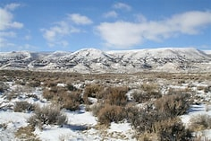
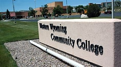

Traveling from Las Vegas, Nevada to Rock Springs, Wyoming has been an eye opener. From a 24-7 lifestyle, to a small town with big city dreams. What better place than this to learn, focus and grow? With ample adventures ahead and time to study in front of me, I get to learn to build web pages or climb power poles. I can study how to protect networks from infiltration and I can make friends who I will run into again in the future. Thanks to Western Wyoming College, the home of a future I had only imagined.

Western Wyoming College has a catalog of amazing opportunitites from becoming a Power Line Technician to studying Political Science and advancing on to a traditional four year institution or taking a fast track Master's program through online institutions like Western Governors University www.wgu.edu. You can learn more at www.westernwyoming.edu.